地政学
マシュハドはイラン北東部の結節点で、アフガニスタン、トルクメニスタン、中央アジアへ向かう道路、鉄道、巡礼路を束ねます。首都ではありませんが、国境管理、難民、交易、宗教権威が近く、国家の東方政策を映す街です。
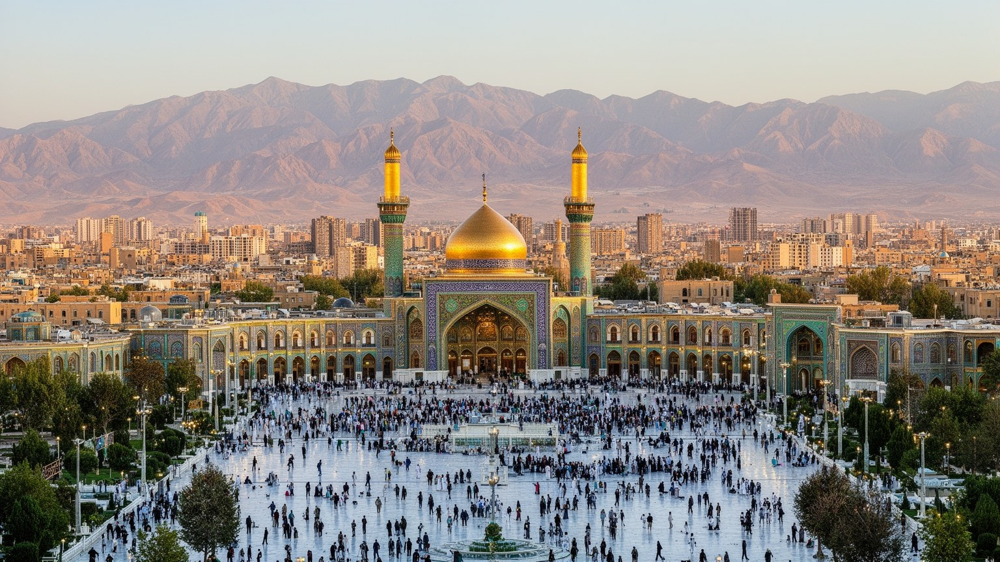
🇮🇷 イラン / 西アジア / World City Atlas
イラン北東部の巡礼都市です。イマーム・レザー廟を中心に、ホラーサーンの交易路、国境経済、神学校、ホテル街、住宅地、郊外開発が重なり、祈りと労働が都市を動かしています。
都市の骨格
マシュハドは、宗教的中心と国境地帯の経済が同じ都市空間に集まる場所です。聖廟、宿泊施設、バザール、鉄道、空港、郊外住宅が、巡礼の時間と住民の日常を結びます。
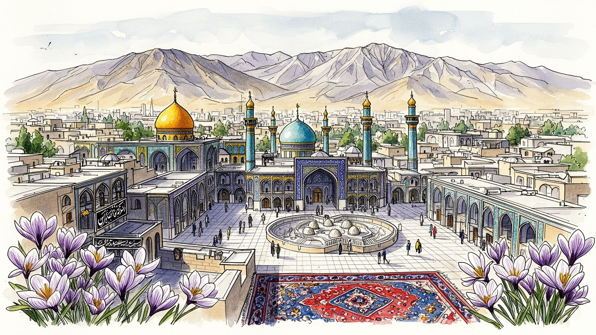
マシュハドはイラン北東部の結節点で、アフガニスタン、トルクメニスタン、中央アジアへ向かう道路、鉄道、巡礼路を束ねます。首都ではありませんが、国境管理、難民、交易、宗教権威が近く、国家の東方政策を映す街です。
聖廟を訪れる巡礼者は、ホテル、飲食、土産、交通、清掃、警備、案内、医療、両替、食品加工を動かします。季節雇用も多く、若者、女性、移住者、露店商の働き方は宗教観光の繁閑に左右される都市です。今も続きます。
イマーム・レザー廟はシーア派信仰の大きな中心で、祈り、葬送、誓願、寄進、神学教育を集めます。ペルシア語、ホラーサーンの詩、料理、音楽、家族の巡礼が重なり、宗教都市の文化を今も形づくっている街です。
観光客は聖廟、バザール、庭園、近郊の山麓を巡るが、住民には家賃、物価、交通混雑、水不足、雇用、巡礼期の混雑が毎日の条件になります。祈りの都市であると同時に、買い物と通勤の現実を抱える大都市です。今も続きます。
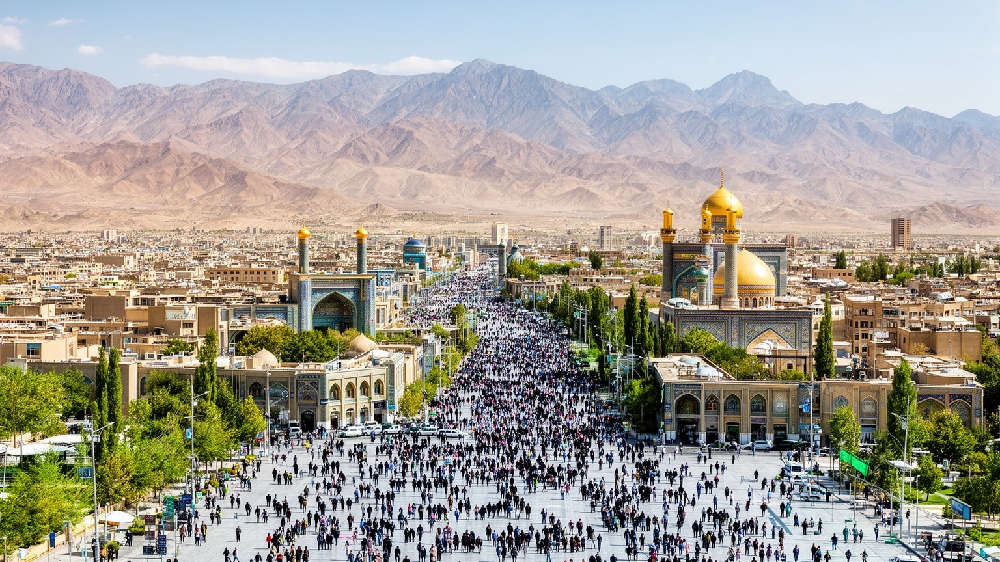
マシュハドはイラン北東部、ビナールード山地に近い盆地状の土地に広がります。乾いた高原の都市でありながら、アフガニスタン、トルクメニスタン、中央アジアへ向かう道が交差するため、地理は単なる背景ではなく政治と商業の条件です。西のテヘラン方面から来る鉄道と道路は、聖廟を目指す国内巡礼者を運び、東へ向かう幹線は国境交易、移民、物流、治安管理へつながります。都市の外縁には乾いた丘陵と新しい住宅地が広がり、中心部では聖廟、ホテル、バザール、官庁、交通結節点が高い密度を作ります。水は限られ、夏の暑さと冬の寒さは生活を強く規定します。都市の成長は、巡礼客を迎える宿泊施設と、住民の住宅需要を同時に押し上げ、古い市街と新しい郊外の距離を広げてきました。マシュハドを読むには、聖地としての中心だけでなく、国境に近い大都市として、人と物と警備が東西に流れる地理を重ねて見る必要があります。周辺農村からの通勤、近郊の保養地、山麓の道路、乾燥地の農産物も都市の生活圏に入り、中心の巡礼景観を外側から支えます。国境に近い位置は商機を生むが、緊張が高まれば移動制限や物価上昇として日常に戻ります。盆地の都市であることは、空気、水、交通の負荷も集中させるため、成長の速度には常に環境の上限がつきまといます。朝夕の幹線道路や郊外バスの混雑には、聖地だけでない普通の大都市の姿もはっきり現れます。
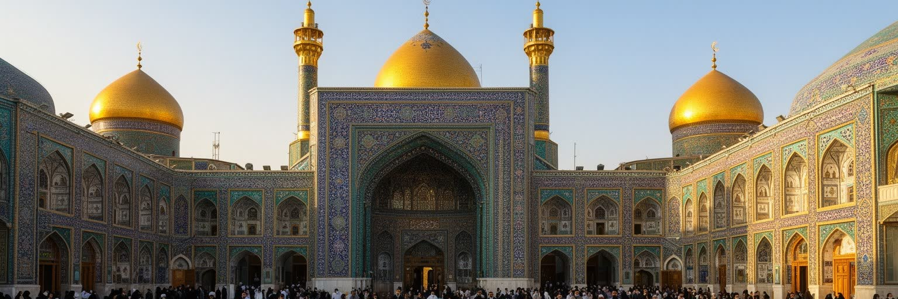
マシュハドの中心はイマーム・レザー廟です。十二イマーム派の第八代イマームを祀るこの聖域は、礼拝所、墓廟、広場、神学校、図書館、博物館、寄進財団の施設を抱え、都市の宗教、経済、象徴性を一箇所に集めています。巡礼者は個人の祈願、家族の病気、受験、結婚、弔い、感謝を持って訪れ、広場では地方の言葉、年齢、服装、階層が交差します。聖廟は観光名所である前に、信仰を身体で経験する場所で、歩く速度、泣く場所、寄進の作法、食事の分かち合いが都市の時間を作ります。周囲の再開発は広い参道とホテル街を生み、古い路地や商店の記憶を変えてきました。宗教的威信は巨大ですが、その運営は清掃、警備、案内、設備管理、調理、翻訳、群衆整理という日々の労働に支えられます。聖廟を見ることは、信仰の中心が同時に都市経営の中心でもある事実を見ることです。夜明け前の礼拝、追悼の日の群衆、家族で囲む簡素な食事、遠方から届く寄進は、建築の壮麗さとは別の深さを持ちます。聖域に近いほど商業も密になるため、祈りの静けさと消費の圧力は常に隣り合います。だから廟の空間は、聖性を保ちながら大都市の混雑を処理する、きわめて実務的な場所でもあります。訪問者が安心して滞在できるかは、礼拝空間の荘厳さだけでなく、案内の分かりやすさ、休む場所、混雑時の安全、家族連れへの配慮によって決まります。信仰の中心は、細部の管理によって日々保たれています。
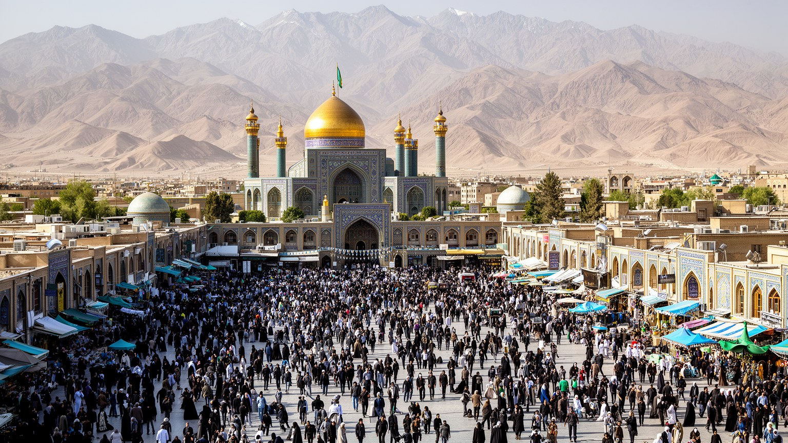
マシュハドの経済は、聖廟を訪れる人の流れを抜きに説明できません。ホテル、安宿、短期賃貸、食堂、菓子店、土産物、宝石、布、香辛料、バス、タクシー、鉄道、航空、医療、葬送、両替、巡礼案内は、祈りの需要を受けて仕事を作ります。家族単位で来る巡礼者は食事、宿泊、買い物をまとめて行い、宗教行事や休暇の時期には中心部の価格と混雑が大きく変わります。露店商、清掃員、調理人、ホテル従業員、運転手、警備員、通訳、若いサービス労働者は、聖地の静かなイメージの背後で長い時間働きます。巡礼経済は都市に雇用をもたらすが、季節差、不安定な収入、家賃上昇、土地投機も生みます。宗教財団や寄進の資金は福祉、教育、都市開発にも影響し、行政と市場だけでは見えない経済の回路を作ります。マシュハドでは、祈りは精神的行為であると同時に、宿、台所、交通、清掃、金融を動かす都市産業でもあります。さらに巡礼客の多くは高所得の旅行者ではなく、節約しながら家族で滞在する人々です。安価な食堂、相部屋の宿、長距離バス、簡素な土産は、そうした予算に合わせて発達します。豪華なホテルだけを見れば都市の経済は豊かに見えますが、実際には小さな利益を積み重ねる仕事が多く、物価上昇は働く側にも訪れる側にも重く響きます。だから巡礼経済の健全さは、訪問者数だけでなく、賃金、休息、家賃、食材価格が釣り合うかで測る必要があります。
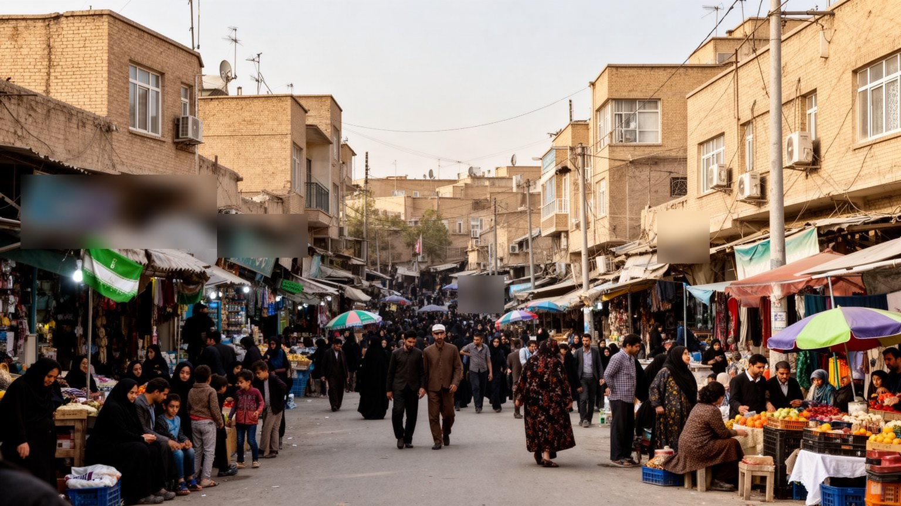
マシュハドはイランの内陸都市でありながら、国境の気配が濃いです。アフガニスタン西部やトルクメニスタン方面からの移動、交易、難民、親族関係、労働の流れが、駅、バスターミナル、市場、住宅地に現れます。ヘラート方面との結びつきは歴史的にも深く、ペルシア語文化圏の連続性は国境線だけでは切れないです。一方で、国家は治安、在留資格、密輸、麻薬対策、労働管理を重視し、国境地域の不安定さは都市の政策にも影を落とします。アフガン系住民や移住労働者は建設、清掃、小売、食品、運輸などで都市を支えますが、身分証、教育、医療、住宅、差別の壁に直面しやすいです。マシュハドの市場では、巡礼者向けの商品と国境交易の商品が近くに並び、宗教都市の顔と辺境経済の顔が重なります。都市の国際性は華やかな外交だけでなく、国境を越えて働き、学び、避難し、家族を支える人々の日常として理解される必要があります。学校で言葉を学ぶ子ども、送金を待つ家族、安い部屋を探す若者、国境情勢で仕事を失う運転手は、地政学を抽象論ではなく生活の変化として経験します。マシュハドの安定は、国境を閉じる力だけでなく、来た人をどう受け入れ、働く権利や教育につなげるかにも左右されます。国境をめぐる不安は、治安の問題であると同時に、労働市場、学校、病院、賃貸住宅がどれだけ柔軟に対応できるかという都市の能力を試しています。
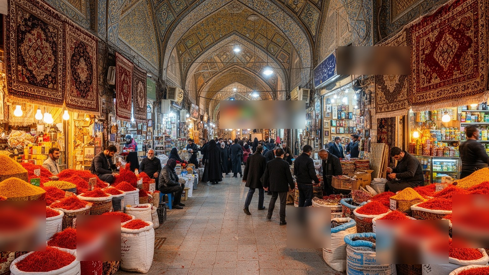
聖廟周辺のバザールは、観光客の土産売り場であると同時に、住民が日用品を買い、職人や卸商が仕事をつなぐ場所です。サフラン、乾果、香辛料、布、絨毯、数珠、指輪、銀細工、宗教用品、菓子、衣料は、巡礼の記憶と家庭の消費を同じ棚に並べます。価格交渉、信用取引、親族経営、職人の技、荷運び、倉庫、配送が市場の奥行きを作り、表通りの店だけでは経済の全体は見えません。再開発で広い道路や新しい商業施設が増えると、古い店は集客の利点を得る一方、家賃や立ち退きの圧力を受けます。バザールは伝統的な風景として保存されるだけでなく、若者の雇用、女性の購買、地方から来る巡礼者の予算、国境交易の価格変動に反応する生きた制度です。マシュハドの市場を歩くと、宗教的な記念品、ホラーサーンの農産物、家庭の衣食、物流の現実が近い距離で結びついていることが分かります。店先の丁寧な接客の背後には、早朝の仕入れ、親戚からの借入、職人の納期、値札を何度も書き換える物価の不安があります。観光客が買う小さな土産も、農家、加工場、運送業者、包装の仕事を通って届きます。市場は信仰の記憶を売る場所であると同時に、都市経済の細かな神経です。買い物の会話には、地方の訛り、巡礼の予定、家族の土産、為替や制裁の影響が混ざります。棚に並ぶ品は、都市の外側に広がる農村と国境路の動きを静かに伝えています。
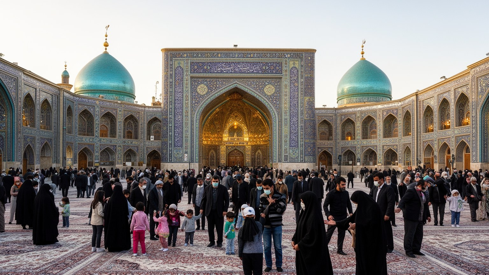
マシュハドは巡礼都市であるだけでなく、宗教教育と学問の都市でもあります。聖廟に結びつく神学校、図書館、研究機関は、シーア派法学、神学、説教、儀礼、慈善、出版を支え、国内外から学ぶ人を集めます。大学や医療機関も都市の重要な雇用と知的基盤で、工学、医学、人文、農業、地域研究の人材を育てます。学生は中心部の宗教的空間と郊外のキャンパス、住宅地、カフェ、書店を行き来し、都市の世代構成を若く保ちます。一方で、教育機会は性別、所得、出身地、在留資格によって差が出やすく、卒業後の雇用も経済制裁や国内景気に左右されます。宗教教育は保守的な規範を強めるだけでなく、福祉、相談、言語学習、国際交流を担う回路にもなります。マシュハドの知は、聖典を読む静かな場、病院の実習、大学の研究室、巡礼者への説法、書店と出版の仕事が重なって成り立ちます。神学生と一般大学生は同じ都市に住みながら、異なる服装、時間割、将来像を持つことが多いです。それでも公共交通、食堂、図書館、家族の期待、就職の不安は共有されます。知の都市としてのマシュハドは、宗教権威だけでなく、医療、翻訳、地域研究、若者の議論が交差する場として見ると立体的になります。教育の厚みは都市に中間層を育てるが、学んだ若者が地元で働き続けられるかは別問題です。知識の集積を雇用、文化、公共サービスへつなげられるかが、巡礼都市の未来を左右します。
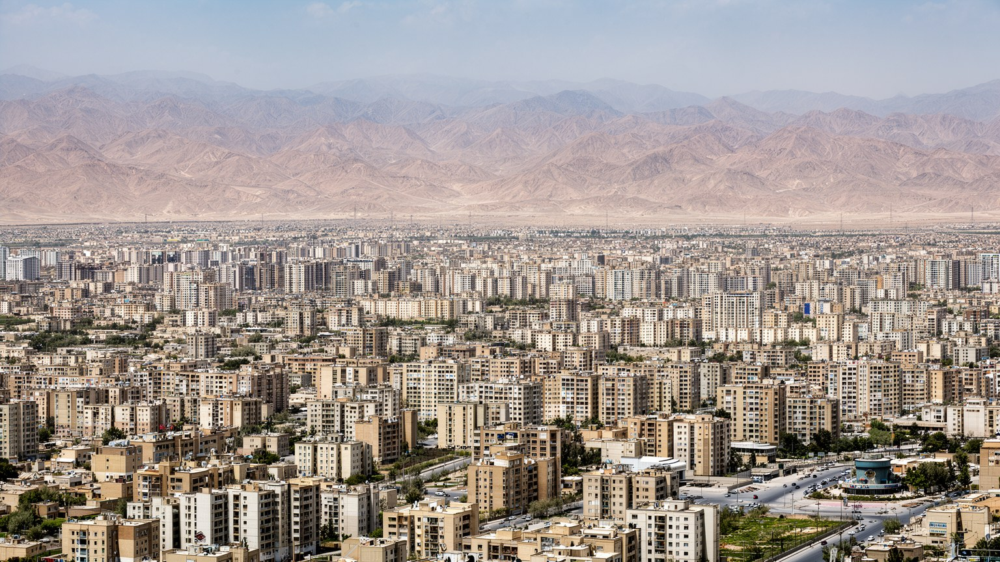
マシュハドの生活は、聖廟の輝きだけでは見えません。中心部のホテル街と商業地の外側には、集合住宅、戸建て、郊外団地、未整備の周辺地区が広がり、家賃、通勤、学校、医療、買い物が住民の日常を決めます。巡礼客向けの短期滞在施設が増える場所では、住民向け住宅の価格が上がり、古い近隣関係が変わることがあります。郊外へ移る世帯は広さを得る一方、公共交通、雇用、病院、学校への距離を負担します。若者には仕事と住宅費の問題が重く、低所得層や移住者は中心から遠い地区や質の低い住まいに押し出されやすいです。水不足と夏の暑さは住宅の断熱、緑地、公共空間の不足をより深刻にします。マシュハドは祈りの都市である前に、子どもを学校へ送り、食材を買い、家賃を払い、混雑した道路を通う生活都市です。聖地の価値を守るには、訪れる人だけでなく、そこに暮らす人の住宅と移動を守る必要があります。集合住宅の中庭、近所のパン屋、女性が使いやすい移動手段、子どもの遊び場、高齢者が涼める場所は、統計に出にくい生活の質を決めます。巡礼期の道路規制や混雑は商売には機会でも、通勤や通院には負担になります。都市計画は聖廟の周辺美化だけでなく、住民が日常を失わないための細かな調整で評価されます。夜遅くまで働く人、遠い郊外から通う学生、家族を介護する世帯にとって、近所の小さな施設や安全な歩道は大きな支えになります。
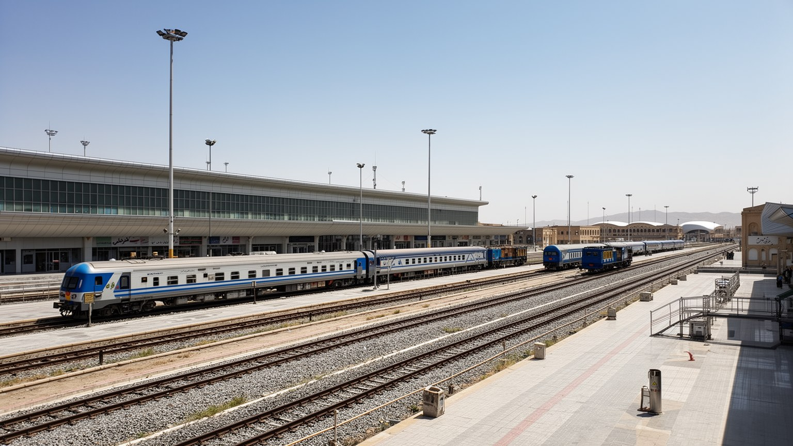
マシュハドの交通は、巡礼と日常通勤の両方を処理するために発達してきました。鉄道駅はテヘランや国内各地から来る巡礼者を迎え、空港は遠距離の旅行者やビジネス客を運び、長距離バスは地方都市と家族旅行を結びます。中心部では聖廟へ向かう歩行者、タクシー、バス、地下鉄、荷さばき、警備規制が重なり、宗教行事の時期には動線管理が都市運営の中心になります。交通は便利さだけでなく、誰が聖廟に近づけるか、誰が郊外から仕事へ通えるか、物価や家賃がどこで上がるかを左右します。道路拡幅や再開発は混雑を減らす目的を持つが、古い路地や小さな商店を失わせることもあります。歩ける参道と効率的な車両動線の両立は、聖地の尊厳と生活の実用性を同時に問う問題です。マシュハドの玄関口を見ると、都市が祈りの場所でありながら、巨大な交通処理施設でもあることが明確になります。到着した巡礼者には案内、休憩、荷物、トイレ、食事、宿探しが必要で、交通結節点は福祉の入口にもなります。住民にとっては通勤時間、運賃、夜間の安全、渋滞時の救急車の通行が重要です。移動を観光客の便利さだけで測ると、生活都市としての交通課題を見落とします。郊外が広がるほど自家用車依存も強まり、燃料費、大気、駐車、道路事故が生活費へ戻ってくります。公共交通を聖廟中心だけでなく、学校、病院、職場を結ぶ網として整えることが重要です。
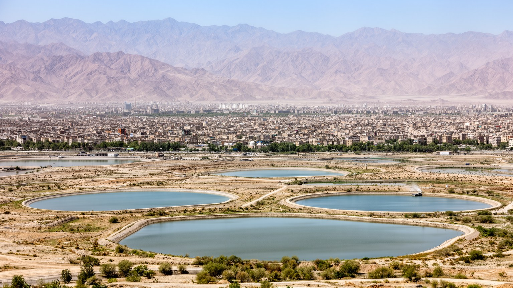
マシュハドの成長を制約する最大の条件の一つは水です。半乾燥の気候では雨が少なく、地下水や遠方からの供給に頼る都市化は、人口増加、ホテル建設、緑地、工業、家庭用水の需要を押し上げます。夏の暑さは屋外労働、巡礼者の移動、高齢者の健康、冷房費を重くし、冬の寒さは低所得世帯の暖房負担を増やします。水不足は単に環境問題ではなく、住宅開発、農業、食品加工、公共衛生、都市の公園、宗教行事の運営まで関わります。気候変動が乾燥と熱波を強めれば、聖地に人を迎える能力そのものが問われます。街路樹、日陰、休憩所、公共トイレ、飲料水、断熱住宅、効率的な配水は、観光の快適さだけでなく住民の生存条件です。マシュハドでは、信仰の中心を維持することと、乾燥地の資源を慎重に使うことが切り離せません。都市の成熟は、どれだけ大きくなるかではなく、限られた水と暑さの中で弱い人を守れるかにも表れます。ホテルや商業施設が水を使うほど、周辺の農地や低所得地区には負担が寄りやすいです。暑い日に長い距離を歩く巡礼者、屋外で働く警備員や露店商、断熱の弱い住宅に住む家族は、気候リスクを身体で受けます。聖地を守る都市政策は、節水、日陰、涼しい避難場所を生活インフラとして扱う必要があります。乾いた都市では、一本の街路樹や小さな水場も装飾ではなく健康を守る設備になります。気候への備えを宗教観光の質と住民福祉の両方から考えることが欠かせません。

マシュハドは聖地として尊敬を集める一方、住民の日常には多くの緊張があります。巡礼経済は雇用を生むが、収入は季節や政治情勢、制裁、物価変動に左右されやすいです。若者は安定した仕事と住宅を求め、女性は教育や就労の機会を広げながら、宗教都市の規範とも向き合います。移住者やアフガン系住民は都市を支える重要な労働力でありながら、法的地位、教育、医療、差別の問題を抱えやすいです。中心部の再開発は群衆管理と防災に役立つが、古い近隣や小商いを失わせることもあります。聖廟周辺の秩序は、信仰の尊厳を守る目的を持つ一方、若者文化、観光、商売、公共空間の使い方を制約することもあります。社会問題を語るとき、マシュハドを単に保守的な宗教都市として見るだけでは足りません。祈り、働き、移住し、学び、家族を支える人々が、経済の不安と道徳規範の間で日々調整している都市として読む必要があります。薬物問題、貧困、家族の負債、非公式な仕事、若者の将来不安は、聖地の外から来た問題ではなく大都市そのものの課題です。慈善や宗教組織は支援の回路になりますが、制度からこぼれる人もいます。尊厳ある都市とは、聖域を清潔に保つだけでなく、見えにくい困窮を公共の問題として扱える都市です。観光客の目に入りにくい周辺地区、夜間労働、家族内の介護、移住者の子どもの教育を見れば、都市の包容力がより厳しく問われます。聖地の名声は、弱い立場の人を見えなくする理由にはなりません。